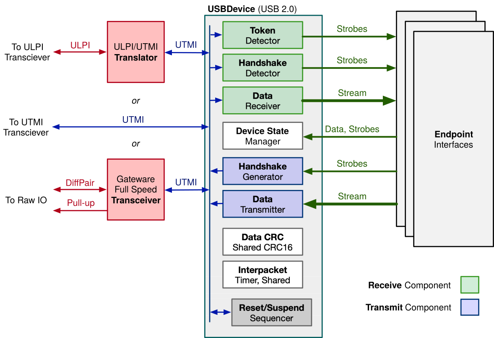

Endpoint
Gateware Endpoint Interfaces
The Torii-USB architecture separates gateware into two distinct groups: the core device, responsible for the low-level communications common to all devices, and endpoint interfaces, which perform high-level communications, and which are often responsible for tailoring each device for its intended application:

Every useful Torii-USB device features at least one endpoint interface capable of at least handling enumeration. Many devices will provide multiple endpoint interfaces – often one for each endpoint – but this is not a requirement. Incoming token, data, and handshake packets are routed to all endpoint interfaces; it is up to each endpoint interface to decide which packets to respond to.
*Note: terms like "interface" are overloaded: the single term "interface" can refer both to hardware interfaces
and to the USB concept of an Interface. The "interface" in "endpoint interface" is an instance of the former;
they are conceptually distinct from USB interfaces. To reduce conflation, we'll use the full phrase "endpoint
interface" in this document.*
As a single endpoint interface may handle packets for multiple endpoints; it is entirely possible to have a device that talks on multiple endpoints, but which uses only one endpoint interface.
Exclusivity
A Torii-USB USBDevice performs no arbitration – if two endpoint interfaces attempt to transmit at the same time, the
result is undefined; and often will result in undesirable output. Accordingly, it’s important to ensure a “clear
delineation of responsibility” across endpoint interfaces. This is often accomplished by ensuring only one endpoint
interface handles a given endpoint or request type.
Gateware for working with abstract endpoints.
- class torii_usb.usb.usb2.endpoint.EndpointInterface
Interface that connects a USB endpoint module to a USB device.
Many non-control endpoints won’t need to use the latter half of this structure; it will be automatically removed by the relevant synthesis tool.
- Variables:
tokenizer (TokenDetectorInterface, to detector) – Interface to our TokenDetector; notifies us of USB tokens.
rx (USBOutStreamInterface, input stream to endpoint) – Receive interface for this endpoint.
rx_complete (Signal(), input to endpoint) – Strobe that indicates that the concluding rx-stream was valid (CRC check passed).
rx_ready_for_response (Signal(), input to endpoint) – Strobe that indicates that we’re ready to respond to a complete transmission. Indicates that an interpacket delay has passed after an rx_complete strobe.
rx_invalid (Signal(), input to endpoint) – Strobe that indicates that the concluding rx-stream was invalid (CRC check failed).
rx_pid_toggle (Signal(), input to endpoint) – Value for the data PID toggle; 0 indicates we’re receiving a DATA0; 1 indicates Data1.
tx (USBInStreamInterface, output stream from endpoint) – Transmit interface for this endpoint.
tx_pid_toggle (Signal(2), output from endpoint) – Value for the data PID toggle; 0 indicates we’ll send DATA0; 1 indicates DATA1. 2 indicates we’ll send DATA2, while 3 indicates we’ll send DATAM.
handshakes_in (HandshakeExchangeInterface, input to endpoint) – Carries handshakes detected from the host.
handshakes_out (HandshakeExchangeInterface, output from endpoint) – Carries handshakes generate by this endpoint.
speed (Signal(2), input to endpoint) – The device’s current operating speed. Should be a USBSpeed enumeration value – 0 for high, 1 for full, 2 for low.
active_address (Signal(7), input to endpoint) – Contains the device’s current address.
address_changed (Signal(), output from endpoint.) – Strobe; pulses high when the device’s address should be changed.
new_address (Signal(7), output from endpoint) – When
address_changedis high, this field contains the address that should be adopted.active_config (Signal(8), input to endpoint) – The configuration number of the active configuration.
config_changed (Signal(), output from endpoint) – Strobe; pulses high when the device’s configuration should be changed.
new_config (Signal(8)) – When config_changed is high, this field contains the configuration that should be applied.
timer (InterpacketTimerInterface) – Interface to our interpacket timer.
data_crc (DataCRCInterface) – Control connection for our data-CRC unit.
- class torii_usb.usb.usb2.endpoint.USBEndpointMultiplexer(*args: Any, src_loc_at: int = 0, **kwargs: Any)
Multiplexes access to the resources shared between multiple endpoint interfaces.
Interfaces are added using
add_interface.- Variables:
shared (EndpointInterface) – The post-multiplexer endpoint interface.
- add_interface(interface: EndpointInterface)
Adds a EndpointInterface to the multiplexer.
Arbitration is not performed; it’s expected only one endpoint will be driving the transmit lines at a time.
- or_join_interface_signals(m, signal_for_interface)
Joins together a set of signals on each interface by OR’ing the signals together.